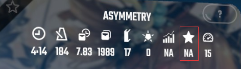

更好地了解Rank系统、计分和加成项等内容的指南
由TeknozFR编写，Viounti翻译为中文。
非常感谢WGzeyu提供的大量技术支持、waika提供的部分翻译支持，以及漠然轻寒提供的部分翻译支持以及翻译思路。
免责声明：这个指南于2019年2月17日制作（于2020年4月13日开始被翻译成中文），原作者会尽力保持其为最新，但仍然有某些信息不准确，甚至没有记录。本教程可以让大家更好的了解rank系统和游戏的其他方面（打分），但并不是这款游戏的完整教程，希望它对您有用。
准度和计分
计分倍率
在游戏内，您可以在左侧看到您的分数乘数，它是一个被白色圆圈包裹（之后称之为外圈）的数字。
顾名思义，分数乘数会影响您的分数。在您开始打这首歌的时候，分数乘数为 x1 ，而外圈则会显示到下一个乘数的进度。当您击打一个方块并且分数乘数增加的时候，该方块的得分会被乘上最新的乘数，而不是之前的乘数。
分数乘数分别为：1x, 2x, 4x 和 8x。当您丢失连击时（包括丢失方块，击打方向错误，光剑使用错误，击打炸弹以及被墙覆盖），分数乘数将减半。
得分
在Beat Saber里得分并不简单，它不但取决于高连击和不丢失方块，还取决于每个方块的得分。
每个方块的最大击打分为 115 分（不乘分数乘数）。击打方块时，必须用正确的角度击打，并且必须将方块在中间一分为二，才能得到最佳分数，如下：
| 击打前挥100° | 70分 |
| 击打后挥60° | 30分 |
| 方块碎片两半一样大 | 15分 |
这表明了使用正确的角度挥剑的重要性，因为这样您才能获得更高的分数。但请记住，击打不完美（bad cut）永远比丢掉方块好，因为丢失方块会被记为0分，断掉连击以及扣血。
判定范围（hitboxes）
在Beat Saber中，大多数人认为方块本身就是判定范围，这是一个很常见的误解。尽管在之前是这样的，但是随着游戏更新，判定范围更改了不少次，图中是当前版本的判定范围。
如图，当前版本的判定范围在前方和边缘都加大了，所以这里建议您使用剑尖来击打，以便获得完美击打（best cut）。
据说在将来的版本中会添加“Pro Modifier”, 它可以判定范围变为方块本身。
准度
准确度可以这么理解：您目前的得分相对于满分的占比。
准确度可以在选歌页面的 Player Settings->Advanced HUD 开启，开启后准确度显示会在左侧，它以百分数和字母表示，它可以很好的反应您得分的能力。
准确度通过命中方块，分数乘数，还有丢失方块来计算。
下图列举了准确度和字母的关系：

感谢WGzeyu提供的图片
如上图，数字对应的是百分数（%），数字下方是对应的字母。
举个例子：如果您一首曲子打了85%，那么您对应字母的就是 S 。
Rank过程
Rank与Unrank
大多数人刚开始会花不少时间来了解ranked和unranked的区别,虽然谱子被rank并不会让它变得更好；但是这对于要进行排名的新玩家来说很重要。
Ranked铺面
Rank后的谱子会有一个难度等级（也被称为真实难度），这个等级用星号（⭐）来表示（详情见下方的 难度 项）。
每个等级都有对应数量的pp点（Performance Points）；玩家可以通过完成被rank的谱子来获得pp，而准确度越高，获得的pp越多。
Rank后的谱子大多数都是良好的谱子，不会出现塞爆，同向方块，以及其他难以击打的情况；注意：想在排行榜上升排名只有去打Rank的谱子才行。
对此有疑问如：pp是什么？rank组是什么？ 请继续看，下面详细讲述了这些问题。
Unranked铺面
所有人都可以使用 Mediocre Mapper（MM）这类谱面编辑器来做谱并且上传至Beatsaver，但是上传至Beatsaver并不需要审核，所以谱面的质量参差不齐。
而Uranked的谱子就是在Beatsaver发布并且没有经过 rank组 审核的谱子。
这类谱子并没有标注难度等级 ⭐，也就是说您并不知道它的真实难度（不知道它适不适合您）；也不知道具体谱面质量如何（总体质量可以通过观察点赞数和点踩数知晓）
请注意：谱面内的难度（例如Expert）并不代表真实难度，因为它是作者自定义的难度；
举个例子：在Beatsaver下载的谱子，可能会出现hard比expert+难的情况。
铺面Rank过程
有了Score Saber这个排名插件之后，需要许多高质量/可排名性强的谱面以便进行排名，于是就在discord成立了一个谱面审核小组（rank team 之后称为 审核小组）。
审核小组创建了 审核标准 ，所以并不是所有的谱面都能被rank。ranked的谱面必须符合审核标准；如果审核标准更新后，该谱面不符合审核标准，将会被取消ranked（unrank）。
那么这些谱子是怎么被排名的呢？十分简单：谱师将制作好的谱子提交到discord的审核频道，审核人员（rankers）将会初审该谱子，如果有问题则告诉谱师需要修改的地方。
如果没有问题则会通过初审，之后由整个审核小组投票，如过没有反对票，则通过审核，投放到qualified队列，由玩家测试；若玩家没有意见则会正式发布，若玩家有意见则会重新审核后通知谱师修改。
审核小组通常会花费大量的个人时间来完成审核，但他们常常无缘无故地受到批评；所以请对他们表示感谢，以及...给他们一些爱♥
难度
上文提到了难度是由作者自定义的，也就是说您看到的expert+或者hard都不是该谱面真实难度，而是针对于这个谱面的难度（我个人称它为 虚假难度）；所以您下载unranked的谱子的时候，可能会出现easy难度比expert+还难的情况。
这时就需要一个真实难度来给ranked谱子标注难度，真实难度用⭐表示，如下图：
值得注意的是，unranked的谱子并没有真实难度（有例外，在下方做出了解释），如图：

所以，如果你的技术还不够好，笔者这里建议您去打一些真实难度比较低的谱子。
如果一首谱子被rank后又被unrank了，那么这首谱子也会保留星级；因为星级是rank组制定的（不准确）
Rank系统（PP系统）
此页仍在翻译施工中，完整内容请先查看原文或过段时间再来看。
我应该如何获得PP分，排名系统如何运作？
此页仍在翻译施工中，完整内容请先查看原文或过段时间再来看。
PP系统如何工作，什么是加权PP？
此页仍在翻译施工中，完整内容请先查看原文或过段时间再来看。
为什么我的总PP不如我在新分数中获得的加权PP那样快？
此页仍在翻译施工中，完整内容请先查看原文或过段时间再来看。
如何改善并获得更多PP？
此页仍在翻译施工中，完整内容请先查看原文或过段时间再来看。
加成项
加成项和Ranked歌曲
此页仍在翻译施工中，完整内容请先查看原文或过段时间再来看。
No Fail (-0.50)
此页仍在翻译施工中，完整内容请先查看原文或过段时间再来看。
No Obstacles (-0.05)
此页仍在翻译施工中，完整内容请先查看原文或过段时间再来看。
No Bombs (-0.10)
此页仍在翻译施工中，完整内容请先查看原文或过段时间再来看。
Slower Song (-0.30)
此页仍在翻译施工中，完整内容请先查看原文或过段时间再来看。
Insta Fail (0.00)
此页仍在翻译施工中，完整内容请先查看原文或过段时间再来看。
Battery Energy (0.00)
此页仍在翻译施工中，完整内容请先查看原文或过段时间再来看。
Disappearing Arrows (+0.07)
此页仍在翻译施工中，完整内容请先查看原文或过段时间再来看。
Faster Song (+0.08)
此页仍在翻译施工中，完整内容请先查看原文或过段时间再来看。
Ghost Notes (+0.11)
此页仍在翻译施工中，完整内容请先查看原文或过段时间再来看。
手柄握法
为什么要更换握法？
此页仍在翻译施工中，完整内容请先查看原文或过段时间再来看。
HTC Vive：
此页仍在翻译施工中，完整内容请先查看原文或过段时间再来看。
Oculus Rift CV1：
此页仍在翻译施工中，完整内容请先查看原文或过段时间再来看。
Oculus Rift S：
此页仍在翻译施工中，完整内容请先查看原文或过段时间再来看。
Windows Mixed Reality：
此页仍在翻译施工中，完整内容请先查看原文或过段时间再来看。
Valve Index：
此页仍在翻译施工中，完整内容请先查看原文或过段时间再来看。
一些提示和链接
提示与技巧 ：
此页仍在翻译施工中，完整内容请先查看原文或过段时间再来看。
挑战自己
此页仍在翻译施工中，完整内容请先查看原文或过段时间再来看。
不要只刷排名
此页仍在翻译施工中，完整内容请先查看原文或过段时间再来看。
记录自己的演奏
此页仍在翻译施工中，完整内容请先查看原文或过段时间再来看。
观看更好的玩家比赛并向他们提问
此页仍在翻译施工中，完整内容请先查看原文或过段时间再来看。
不要想太多
此页仍在翻译施工中，完整内容请先查看原文或过段时间再来看。
练习硬模式
此页仍在翻译施工中，完整内容请先查看原文或过段时间再来看。
玩得开心
此页仍在翻译施工中，完整内容请先查看原文或过段时间再来看。
友情链接：
此页仍在翻译施工中，完整内容请先查看原文或过段时间再来看。